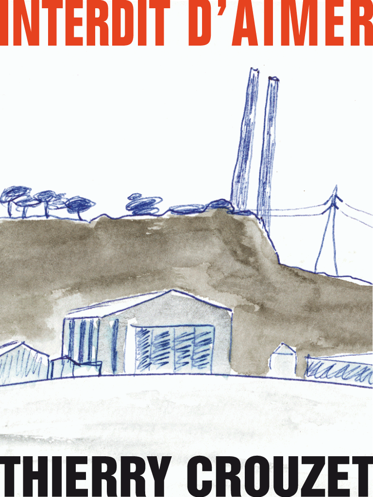

Interdit d’aimer

Dessiner pour mieux voir
Extrait
ebook gratuit : direct.ebook 2.99 € : Amazon, Apple, ePagine, Feedbooks, Fnac, Immateriel, Kobo, Orange.
Je tourne autour des cheminées, l’hiver, l’été, sous la pluie ou la canicule. Pour un coup d’œil, pour une ra-pide esquisse sur un carnet de croquis, je vais où on ne va pas.
Fiche produit
- Éditeur : Autopublication (16 mars 2014)
- Genre : poésie
- Volume : 19 000 signes et 50 aquarelles
- ISBN-13 : 978-2-919358-37-3 (ebook)
Sommaire | Texte publié lundi 10 octobre 2011